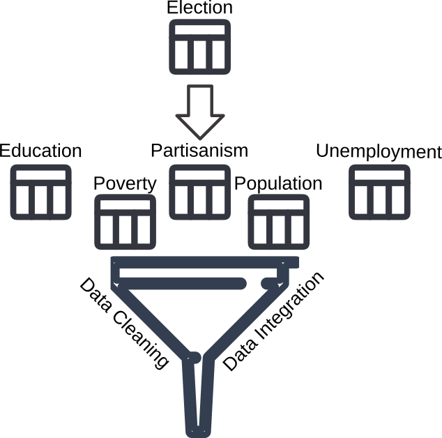

United States Counties case studyUnited States Counties case studyDuring the 2020 US presidential election, the world and America alike were reminded that where an individual lives can best predict what they will decide for their future (that is, how they vote).
We will use the following data sources to create a dataset that allows us to perform voting analysis:
The US Department of Agriculture Economic Research Service (USDA ERS) https://www.ers.usda.gov/data-products/county-level-data-sets/ produces four datasets
Education.xls,PopulationEstimates.xls,PovertyEstimates.xls, andUnemployment.xlsxThe US election results from Massachusetts Institute of Technology (MIT) election data https://dataverse.harvard.edu/dataset.xhtml?persistentId=doi:10.7910/DVN/VOQCHQ
We will eventually integrate all this data into a single table.
However, how do we do so?

modes of votingmode refers to the different ways that individuals had been able to participate in the election.The mode 'TOTAL' is the sum of all the other modes
'TOTAL'mode now has a single value, we can drop the columncounty_namecounty_fipsHow can we find the subject (primary key) of each row?
State + CountyState + County + YearState + County + Year + Partypartisanism attributeparty in the same year by constructing the new attribute partisanism = \(\frac{republicans - democrats}{all~votes}\)
State + County + Year + Party) to (State + County + Year)# Group the election_df by state, county, and year
grouped_df = election_df.groupby(['state_po', 'county_name', 'year'])
# Function to calculate partisanism within each group
def calculate_partisanism(group):
# Calculate votes for each party
democrat_votes = group[group['party'] == 'DEMOCRAT']['candidatevotes'].sum()
republican_votes = group[group['party'] == 'REPUBLICAN']['candidatevotes'].sum()
# Calculate partisanism: Republicans as positive, Democrats as negative
return (republican_votes - democrat_votes) / group["candidatevotes"].sum()
# Apply the function to each group
partisanism_df = grouped_df.apply(calculate_partisanism).reset_index(name='partisanism')
partisanism_df[partisanism_df["state_po"] == "NY"][:4]partisanism time seriesfig, ax = plt.subplots(1, 1, figsize=(6, 3)) # Adjust figure size as needed
i = 0
partisanism_df = partisanism_df.sort_values(by=["year", "county_name"]) # sort data by year
filtered_df = partisanism_df[partisanism_df["state_po"] == "NY"] # consider only counties in NY
for county in filtered_df['county_name'].unique(): # Plot partisanism over time for each county
county_data = filtered_df[filtered_df['county_name'] == county]
plt.plot(county_data['year'], county_data['partisanism'], label=county, marker='o')
if i == 9: break # only plot the first 10 counties in NY
i += 1
# Add labels and title
ax.set_xlabel('Year', fontsize=12)
ax.set_ylabel('Partisanism', fontsize=12)
plt.xticks(ticks=filtered_df["year"].unique(), rotation=45) # Rotate x-axis labels for better readability
ax.legend(title='County', bbox_to_anchor=(1.05, 1), loc='upper left') # Move legend outside the plot
fig.tight_layout()partisanismState + County + Year) to (State + County)pov_df = pd.read_excel('./datasets/census/PovertyEstimates.xls', skiprows=4)
print(pov_df.columns)
# 'POV04_2019' = Estimated percent of people of all ages in poverty 2019
# 'MEDHHINC_2019' = Estimate of median household income 2019
pov_df = pov_df[['Stabr', 'Area_name', 'PCTPOVALL_2019', 'MEDHHINC_2019']]
pov_df = pov_df.rename({'Area_name': 'Area_Name', 'Stabr': 'State'}, axis=1)
pov_df[:4]Now edu_df, pop_df, pov_df, employment_df all have the State and Area_Name columns
Still, they require some manipulation.
for cur_df in [edu_df, pop_df, pov_df, employment_df]:
cur_df.drop(cur_df.index[cur_df['Area_Name'].apply(lambda x: "County" not in x)], inplace=True) # Only keep the counties
cur_df['County_Name'] = cur_df['Area_Name'].apply(lambda x: x.replace(" County", "").lower()) # Lower the name of all counties
cur_df.drop(columns = ['Area_Name'], inplace=True) # Drop the column `Area_Name`
cur_df.set_index(['State', 'County_Name'], inplace=True) # Set the index of the tablepartisan_dfclass attributeclassfrom sklearn.decomposition import PCA
Xs = county_df.drop(columns=["Mean_Partisanism", "Slope_Partisanism", "Intercept_Partisanism", "class"])
Xs = (Xs -Xs.mean()) / Xs.std()
pca = PCA(n_components=2)
pca.fit(Xs)
Xs_t = pd.DataFrame(pca.transform(Xs), index = Xs.index)
Xs_t.columns = ['PC{}'.format(i) for i in range(1, len(Xs_t.columns) + 1)]
Xs_t[:4]Xs_t.plot.scatter(x='PC1', y='PC2', c=county_df["class"].apply(color), sharex=False, colormap ='gray', marker='.',figsize=(10, 10))
for i, row in Xs_t.iterrows():
if row.PC1 > 6.5 or row.PC1 < -4.5:
plt.annotate(i, (row.PC1, row.PC2), size=8)
elif row.PC2 < -7 or row.PC2 > 3.5:
plt.annotate(i, (row.PC1 - 1, row.PC2), size=8)from sklearn.tree import DecisionTreeClassifier, plot_tree, export_text
from sklearn.model_selection import train_test_split
from sklearn.metrics import accuracy_score
def dtree(county_df, max_depth, print_text=False, plot=True):
X = county_df.drop(columns='class')
y = county_df['class']
X_train, X_test, y_train, y_test = train_test_split(X, y, test_size=0.3, random_state=42) # Split the data into training and testing sets
clf = DecisionTreeClassifier(max_depth=max_depth)
clf.fit(X_train, y_train) # Train the decision tree on the training data
y_pred = clf.predict(X_test) # Make predictions on the test data
if plot: plot_tree(clf, feature_names=X.columns, class_names=clf.classes_, filled=True, rounded=True)
if print_text: tree_text = print(export_text(clf, feature_names=list(X.columns)))
return accuracy_score(y_test, y_pred) # Compute the accuracy
dtree(county_df, max_depth=3)Matteo Francia - Machine Learning and Data Mining (Module 2) - A.Y. 2025/26